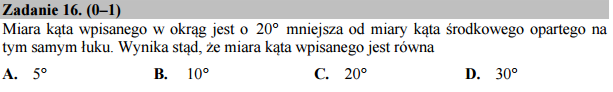

O kątach i rysowaniu¶
Wiemy, że kąt wpisany jest dokładnie dwa razy mniejszy od środkowego więc zadanie sprowadza się do rozwiązania równania: \(2 x = x + 20\), gdzie \(x\) oznacza wartość kąta wpisanego:
I mamy nasze rozwiązanie!
Ale możemy pokusić się o geometryczną konstrukcje, wykorzystująca w
Sage możliwość rysowania lini przechodzącej przez zadane punkty
line i okręgów circle. Załóżmy, że okrąg ma promien
jeden to do narysowania kąta środkowego potrzebujemy wzorów na
współrzędne punktu na okręgu. Z pomocą przychodzą definicje sinusa i
cosinusa i mamy:
Czyli współrzędne punktu na okręgu jednostkowym będącego pod kątem \(\phi\) względem osi x wynoszą: \(\left(\cos(\phi),\sin(\phi)\right)\)
Hmmm, a co z drugą połową wykresu? Oczywiście mamy symetrię
\(y\to-y\) - lub \(\phi\to-\phi\) więc wystarczy odbic
względem osi x nasz rysunek. Moglibysmy dopisać odpowiednie komendy w
funkcji dwa_katy, ale możemy postąpić chytrzej!. Zauważmy, że
w funkcji dwa_katy możemy podać ujemną wartość kąta. Gdybyśmy
mogli nałożyć na rysunek dla kąta \(\phi\) jego symetryczny
odpowiednik dla \(-\phi\) do otrzymalibyśmy kompletną
ilustracje. W Sage jest to niezwykle proste - objekty graficzne można
do siebie dodawać, a nasza funkcja własnie zwraca objekt
graficzny. Poeksperymentujmy sami zastępując ostatnią linię kodu
przez:
(dwa_katy(phi0/180*pi)+dwa_katy(-phi0/180*pi)).show(figsize=5)